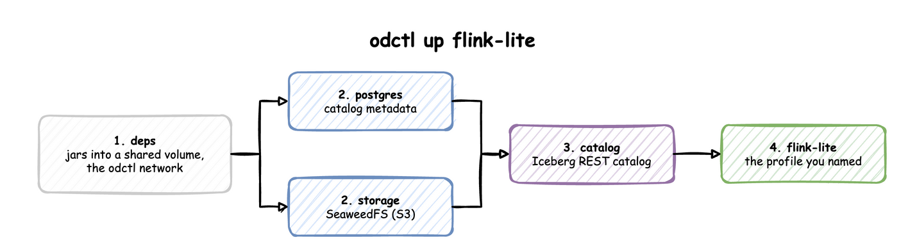

How it works
What odctl up does
Take odctl up flink-lite as an example. Flink keeps its tables in Iceberg, so it needs the Iceberg REST catalog. The catalog keeps its metadata in PostgreSQL and its files in SeaweedFS. All of them need the shared jars in deps.

odctl reads these links from registry.yml and starts the profiles from left to right:
depscopies connectors and jars into a shared Docker volume, creates theodctlnetwork, and exits.postgresandstoragestart, and odctl waits until they are healthy.catalogstarts once both are healthy.flink-litestarts last.
odctl up flink-lite --dry-run prints this plan without starting anything. Each profile page lists what its profile also starts.
down, ps, logs, restart and recreate act only on the profiles you name. odctl down flink-lite stops Flink and leaves PostgreSQL, SeaweedFS and the catalog running for other profiles.
How you reach a service
Every service publishes its ports on the host, so a browser or client on your machine uses http://127.0.0.1:<port>. Docker publishes them on all of the host's network interfaces, so other machines on your network can reach them too. Each profile page lists the ports.
Inside Docker, services reach each other by container name on the odctl network, for example http://catalog:8181 or broker-1:19092 for Kafka. A container of your own reaches them the same way when it joins that network:
Where data lives
Services keep their data inside their containers.
| Command | Containers | Your data |
|---|---|---|
odctl restart |
kept | kept |
odctl recreate |
replaced | lost |
odctl down |
removed | lost |
odctl down --volumes |
removed, with the odctl-shared-deps volume |
lost |
So a database, a bucket, a topic or an Iceberg table lasts until the profile is stopped. This keeps every odctl up a clean start. The odctl-shared-deps volume holds only jars, so keeping it makes the next start faster.
Which images run
Most services run their project's official image, pinned to an exact version. odctl builds five images of its own and publishes them to ghcr.io/jaehyeon-kim/odctl/:
| Image | Contents |
|---|---|
deps |
Connectors, jars and the Prometheus JMX agent, including the Iceberg REST catalog and the Kafka Connect Iceberg sink |
postgres |
PostgreSQL 18 with pgvector, pg_textsearch and PostGIS |
airflow |
Airflow with the MLflow and Feast clients and the model runtimes |
mlflow |
The MLflow server and model server with the model runtimes |
spark |
Spark with the Python clients jobs use |
These five are tagged with the CLI version through TAG. Workspace explains how TAG is set with and without odctl init.
Workspace
odctl runs from one of two places: the files bundled with the CLI, or a workspace that odctl init copies them into.
With and without odctl init
| Without a workspace | With a workspace | |
|---|---|---|
| Files odctl reads | the compose files and registry.yml inside the installed package |
the copies in .odctl in the current directory |
| Image tag of odctl's own images | latest, because no .env sets TAG |
the CLI version, written to .odctl/.env as TAG |
| Your changes | none; the package is replaced on every upgrade | any file in .odctl |
| After a CLI upgrade | new files and images at once | the old files and images, with a warning on every command until odctl init --force |
Without a workspace, latest can be newer than the CLI you run, so use odctl init for anything you want to repeat. A TAG set in the shell overrides both.
odctl looks for .odctl in the current directory. --workspace PATH points it at another directory, so one workspace can serve several projects.
Customise it
odctl init copies everything odctl runs into .odctl. It copies only files that are missing, so running it again keeps your edits.
| File | What to change |
|---|---|
compose-*.yml |
Host ports, memory limits and environment variables of each service |
registry.yml |
The profiles, their compose files and their dependencies |
.env |
TAG, extra Python packages for Airflow (_AIRFLOW_PIP_DEPS) and the MLflow services (_MLOPS_PIP_DEPS), and the model the MLflow model server serves (MODEL_URI) |
grafana/dashboards/ |
The Grafana dashboard for each service |
trino/rules.json |
Trino's file-based access control |
evidently/config.yaml |
The Evidently server's settings |
Apply a change
A restart keeps the container, so it does not apply an edited compose file or .env. Run odctl recreate <profile> to replace the profile's containers from their current definition, and add --pull to fetch images again. Recreating discards the data in those containers. odctl restart <profile> is enough for files a service reads when it starts, such as trino/rules.json and the Grafana dashboards.
Examples
Each example edits the workspace, then applies the change. sed -i.bak works with both GNU and macOS sed, and keeps the original as a .bak file.
Give SeaweedFS 2 GB instead of 512 MB, for example when several projects share it:
sed -i.bak '/^ seaweed:/,/^ [a-z]/ s/mem_limit: 512m/mem_limit: 2g/' .odctl/compose-infra.yml
odctl recreate storage
docker inspect seaweed --format '{{.HostConfig.Memory}}' # 2147483648
Publish Trino on port 8180 instead of 8080, when another program already uses 8080:
sed -i.bak 's/"8080:8080" # Trino/"8180:8080" # Trino/' .odctl/compose-analytics.yml
odctl up trino
docker port trino # 8080/tcp -> 0.0.0.0:8180
Install extra Python packages in the Airflow container, for DAGs that import them:
sed -i.bak 's/^_AIRFLOW_PIP_DEPS=.*/_AIRFLOW_PIP_DEPS="dateparser==1.4.3"/' .odctl/.env
odctl up airflow
docker exec airflow python -c "import dateparser"
The packages install when the container starts, so the first start after the change takes longer. _MLOPS_PIP_DEPS does the same for the mlflow and mlflow-serve containers, for example a library a served model needs to load. MODEL_URI in the same file sets the model mlflow-serve serves, as MLflow tracking and model serving shows.
Trino access rules
The shipped trino/rules.json grants every identity full table privileges and denies analyst schema ownership. Add your own table rules there for row filtering and column masking, then restart Trino.
Start again
odctl init --force deletes .odctl and copies the bundled files again, with TAG set to the current CLI version. Your edits are lost, so it asks for confirmation first.